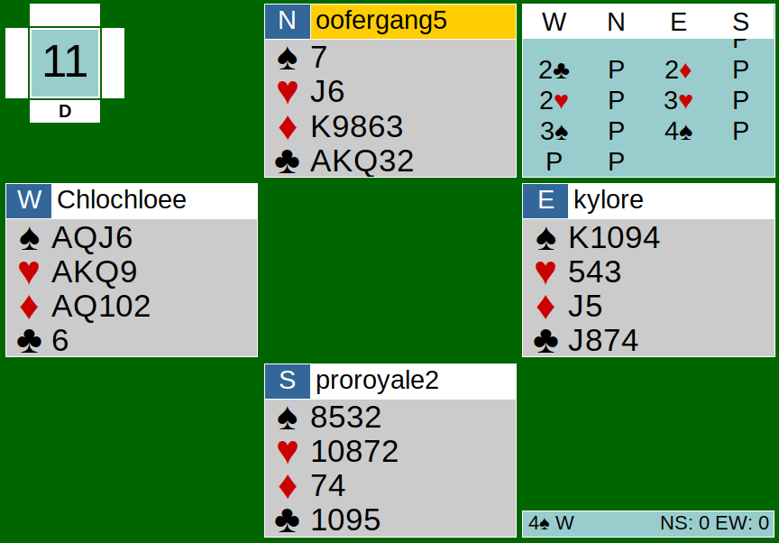
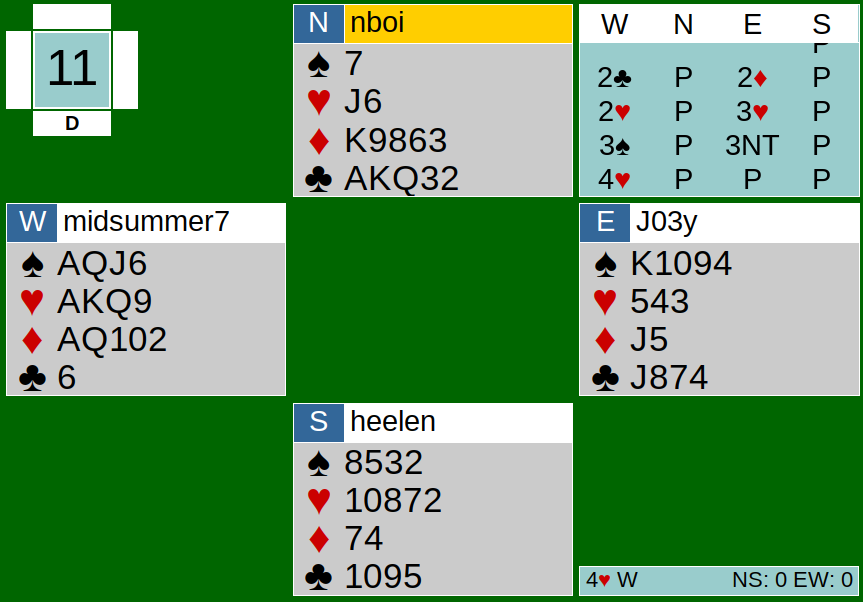

The CK Team Game players got to switch their partnerships up to their desire for our July 4th team game. It seems as though everyone was pretty content with their usual partner. Let’s take a look at how our partnerships communicated on Board 11.
The bidding started off with a 2C opening by West. As a review, this shows 22+ points and nothing about clubs. Both East players responded correctly with the 2D waiting bid and both West players bid 2H. Generally, the bid (usually a major) shows 5 of that suit, so Wests’ 2H bids should show 5 hearts. However, West is 4-4-4-1, so the 2H bid is reasonable. East players, thinking that 2H shows 5 hearts, raised to 3H to show support, but both West players correctly bid spades to show their 4-card spade suit. At the other table, East raised to 4S and the auction ended there. At my table, East, instead of bidding 4S, bid 3NT.


This 3NT bid was a little odd because East doesn’t have a solid diamond stopper or a club stopper. Yes, West probably holds a few stoppers but that is not guaranteed (like this case), and if West actually had stoppers, West would have probably bid 3NT instead of 3S. There may have been a small misunderstanding here too because I don’t think East realizes West’s 3S bid shows 4 spades. But just thinking logically, why would West bid spades when West only holds 3 spades? Based on this bidding sequence, I would assume West to have longer hearts than spades, but still have some value in spades. East at this point should know that they have a 4-4 fit in spades and a 5-3 fit in hearts. Well, turns out they only have a spade fit. 4-4 fits are generally better than 5-3 fits when you have a double fit, so 4S should have been the final contract. However, West bid 4H over East’s 3NT, so the auction ended there at my table.
At the table with the final contract as 4S by West, the opening lead was the Ace of clubs -- excellent lead, shows top of a sequence, which North did have. The play went smoothly until trick 9. After winning with the Jack of clubs in dummy, East led the Jack of diamonds from the board. The Jack of diamonds was set up already and was opposite to West’s AQT of diamonds. West should realize here that the board still has club losers. Instead of covering the Jack of diamonds with her Ace or Queen, West played low, causing her to be stuck in dummy which forced her to play her losing club. West could have overtaken the Jack with her Queen (or Ace, it does not matter) and pitched the losing club in dummy on her diamonds. Turns out, this only cost one trick because the last trick was taken by dummy’s trump. 4S by West making for 420 points.
At my table in the contract of 4H by West, North correctly led his singleton spade. Ace of clubs could have worked here too and it would probably have been better for NS because West would have to trump the second round of clubs when he already does not have a heart fit (and it is on the 4-card trump side in a 4-3 trump fit). West trumped the second round of clubs anyway when North got back in with his King of diamond and played his club honors. After winning the second round of clubs with his trump, West tried cashing out his diamonds, hoping for an even split. Unfortunately for EW, South had a doubleton and the defense’s “cross ruffs” began. South ruffed West’s Queen of diamonds and led a spade back. With the singleton spade lead, it allowed North to ruff now and return a diamond for South to ruff. This shows the importance of pulling trump. NS managed to take 4 tricks from trump. I understand that from West’s perspective, after ruffing the club, it doesn’t feel comforting to pull trump with only 3 small trumps on the board and the AKQ in hand. Other concerns include trump splitting unevenly (not 3-3) allowing the defense to be able to run their club suit. I think the best case here is to just pull at least one round of trump so NS wouldn’t be able to “cross ruff” so many times. After pulling one or two rounds of trump, it would be fine to let NS trump one of your tricks and have them lead whatever from there. From not being in a spade contract to having horrible splits, EW ended up going down 3 for a score of 150 to NS. Team 1 (Nathan, Aldwyn, Chloe, and me) ended up gaining 11 IMPs from these scores.
Link to hands: https://webutil.bridgebase.com/v2/tview.php?t=4594-1593903949&u=